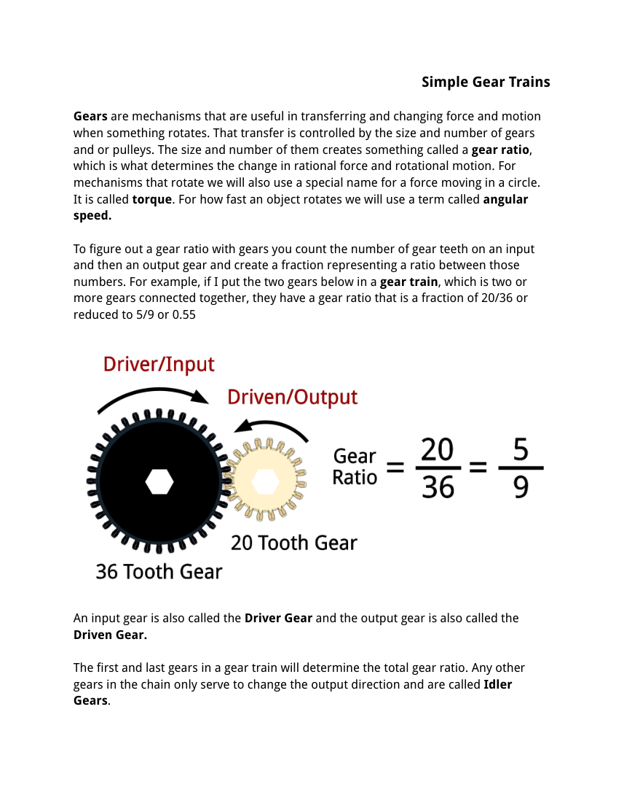
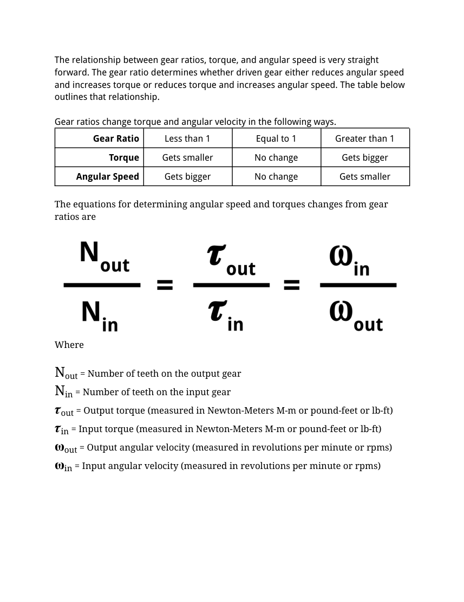
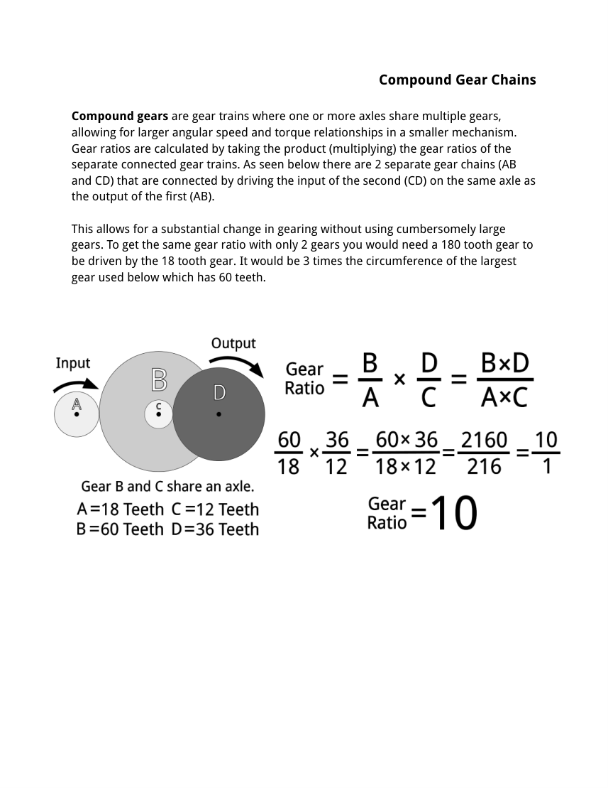
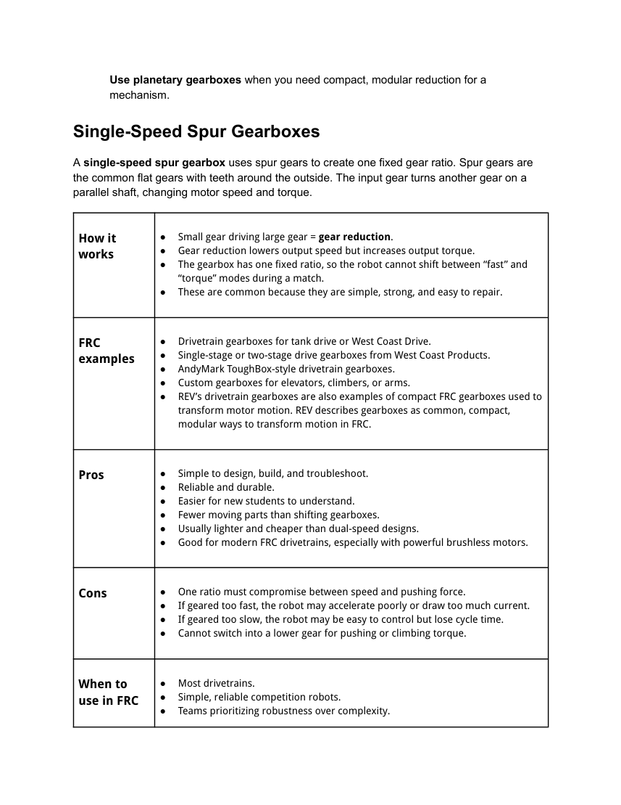
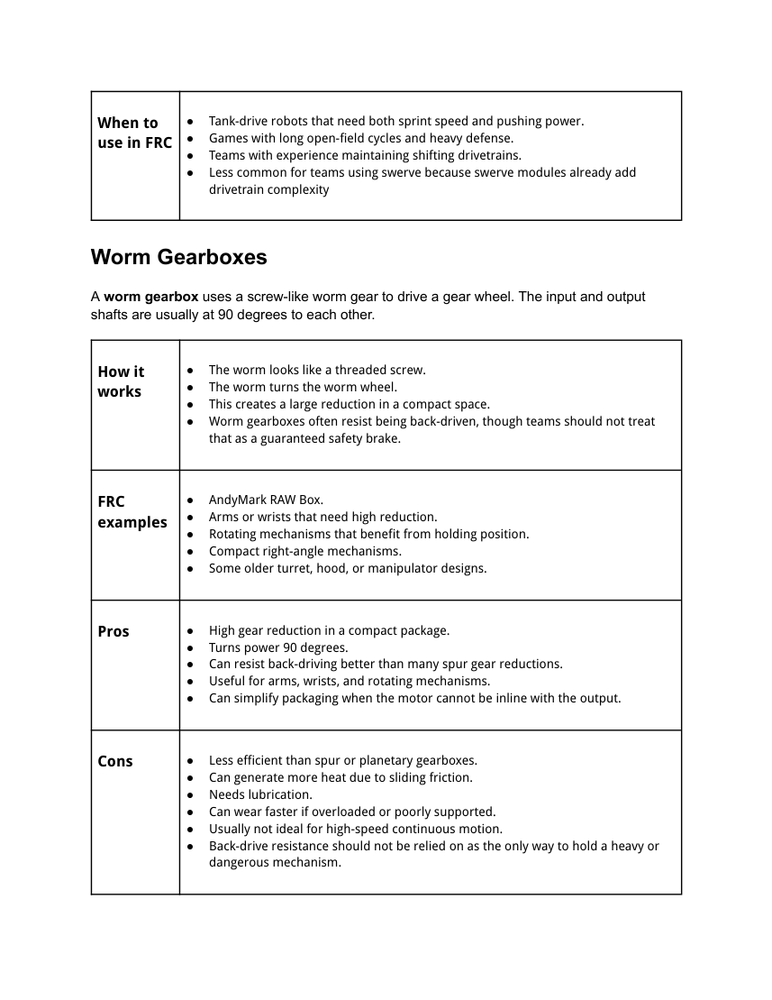
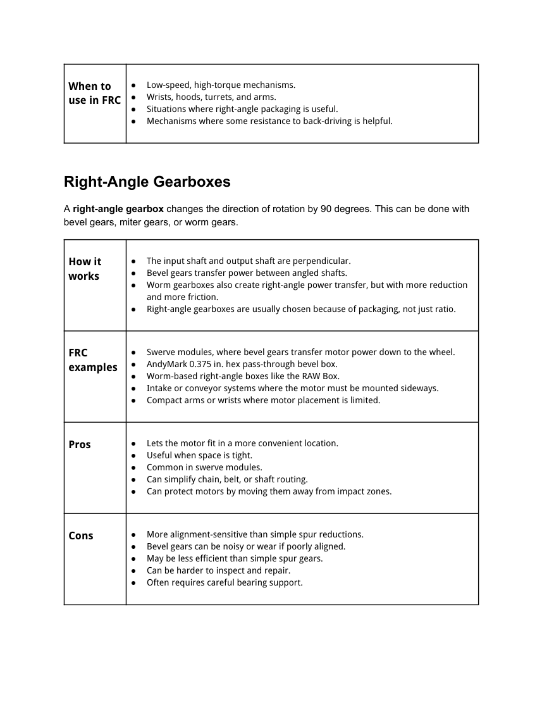
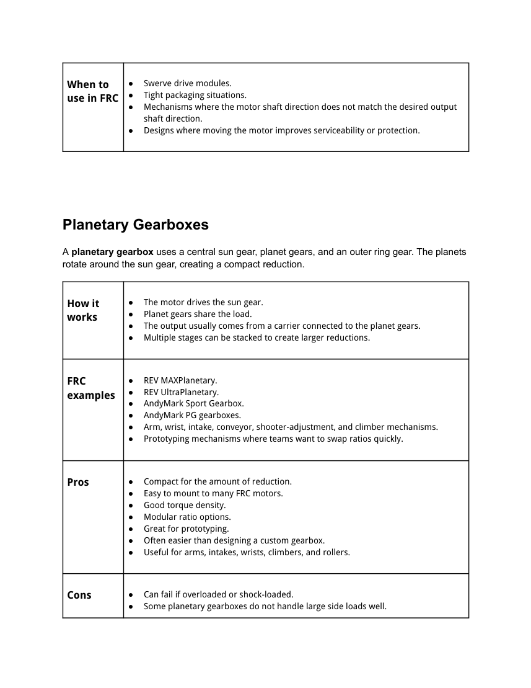

Gearing and Gearboxes Training Module
Gears are one way to move power through a robot
Gears
Compact, precise, and positive engagement. Great when shafts are close and alignment is controlled.
Chain and Sprockets
Good for longer distances, high loads, and mechanisms where some center distance flexibility helps.
Belts and Pulleys
Quiet, light, and smooth. Useful for rollers, shooters, and compact motion runs when tension is planned.
Design choice: Use gearing when you need a compact fixed relationship between shafts or a packaged gearbox solution.
Know the words before calculating
Driver / Input
The gear connected to the motor or previous stage.
Driven / Output
The gear that receives motion and sends it to the mechanism.
Idler
A middle gear that changes rotation direction but does not change the overall ratio.
Gear Ratio
The relationship between input teeth and output teeth.
Driver and driven gears set the ratio
Simple ratio
Count teeth on the output gear and divide by teeth on the input gear.
Gear Ratio = Output Teeth ÷ Input Teeth
- Small drives large: torque increases, speed decreases.
- Large drives small: speed increases, torque decreases.
- Same size gears: speed and torque stay about the same.

Gearing trades angular velocity for torque

What changes?
- Ratio greater than 1: more torque, less speed.
- Ratio equal to 1: no major change in torque or speed.
- Ratio less than 1: more speed, less torque.
FRC teams use this tradeoff constantly when tuning drivetrains, arms, shooters, climbers, and intakes.
Meshed gears reverse rotation direction
Two Gears
Input and output spin opposite directions.
Idler Gear
A third gear flips the direction again but does not change the final gear ratio.
Why it matters
Direction affects how arms, rollers, and drivetrain sides are controlled in code.
Compound gears create larger reductions in less space
How it works
One axle holds multiple gears, so the output of one stage drives the input of the next stage.
Total Ratio = Stage 1 Ratio × Stage 2 Ratio × ...
This lets teams get large reductions without one giant gear.

A gearbox packages gears, shafts, bearings, and mounting

Why use a gearbox?
- Gets the mechanism to the right speed and torque.
- Supports shafts with bearings.
- Mounts motors cleanly.
- Keeps gear spacing accurate.
- Makes repair and replacement more repeatable.
Use the simplest gearbox that meets the need
| Type | Best For | Main Advantage | Main Concern |
|---|---|---|---|
| Single-Speed Spur | Drivetrains, elevators, climbers | Simple and reliable | One fixed compromise |
| Dual-Speed Shifting | Tank drives, speed + pushing | Switches ratios | More complexity |
| Worm | Arms, wrists, rotating mechanisms | High reduction | Efficiency and heat |
| Right-Angle | Swerve, tight packaging | Turns power 90° | Alignment sensitive |
| Planetary | Arms, intakes, wrists, prototypes | Compact modular reduction | Shock and side loads |
Strong, simple, and common in FRC
Use when...
- The mechanism only needs one speed range.
- Reliability matters more than shifting complexity.
- You can pick a ratio that balances speed, torque, current, and control.
FRC examples
Tank drivetrains, elevators, arms, climbers, and simple custom reductions.

Two ratios: one for speed, one for torque
High Gear
More speed, less torque. Useful for full-field sprinting when the robot has room to move.
Low Gear
More torque, less speed. Useful for acceleration, pushing, or reducing current during heavy load.
Tradeoff
Shifters add parts, controls, maintenance, and driver/code decisions.
FRC examples
AndyMark EVO Shifter and WCP dog-shifting gearboxes on tank drive robots.
Compact high reduction with sliding friction

Use when...
- You need high reduction at low speed.
- Right-angle packaging helps the design fit.
- Some back-drive resistance is useful.
Warning: Do not rely on back-drive resistance as the only safe way to hold a heavy mechanism.
Change the direction of power by 90 degrees
Common uses
- Swerve drive modules.
- Intakes or conveyors where the motor must mount sideways.
- Mechanisms where moving the motor protects it from impact.
Bevel gear alignment and bearing support matter a lot.

Compact modular reduction for mechanisms

Why teams like them
- Compact for the amount of reduction.
- Easy to mount to many FRC motors.
- Ratios can often be swapped during prototyping.
- Useful for arms, wrists, intakes, conveyors, and light-to-medium climbers.
Many FRC teams buy gearboxes instead of designing from scratch
REV
- MAXPlanetary
- UltraPlanetary
- 2 Motor Gearbox - Through Bore
AndyMark
- EVO Shifter
- Sport Gearbox
- RAW Box
- Flyer Overdrive Gearbox
WestCoast Products
- SS Flipped Gearbox
- Dog Shifter Gearboxes
- Rotation SS Gearbox
- Swerve modules and bevel gears
Rule: COTS gearboxes save time, but teams must still check ratio, torque limits, motor compatibility, mounting, output support, and current draw.
MAXPlanetary and UltraPlanetary are modular planetary systems
MAXPlanetary
Cartridge-based planetary gearbox for NEO-class and other common FRC motors. Useful when ratio iteration matters.
- Common reductions: 3:1, 4:1, 5:1, 9:1 cartridges.
- Stages can be stacked for larger reductions.
- Often used for arms, wrists, climbers, and manipulators.
UltraPlanetary
Smaller cartridge-based system often paired with 550-class motors and smaller mechanisms.
- Good for prototypes and lighter-duty mechanisms.
- Watch torque limits and shock loads.
- Support outputs when side loads are present.
AndyMark gearboxes cover drivetrain and mechanism needs
EVO Shifter
A drivetrain shifter that lets teams choose high and low ratios.
Sport Gearbox
A planetary gearbox family often used for FRC mechanisms that need compact reduction.
RAW Box
A worm-style right-angle gearbox useful for compact high-reduction rotation.
Flyer Overdrive
Designed so teams can configure output faster or slower than input for shooters or rollers.
ToughBox Style
Historically common simple drivetrain gearbox layout.
When to choose
Choose when a product matches your ratio, load, packaging, and motor needs.
WCP products support drivetrains, swerve, and rotating mechanisms
SS Flipped Gearbox
Compact fixed-ratio drive gearbox for West Coast Drive layouts.
Dog Shifter Gearboxes
Multi-ratio drivetrain options when strategy justifies shifting.
Rotation SS
Good fit for arms, turrets, and low-speed rotating mechanisms.
Swerve X / XS
Uses precise gear reductions and bevel gears in a packaged swerve module.
Bevel Gears
Common for right-angle power transfer in custom swerve and compact mechanisms.
When to choose
Use when packaging, serviceability, and FRC-specific hardware support match your design.
Start with the mechanism job, not the motor
Drivetrain
Balance top speed, acceleration, pushing, current, wheel size, and driver control.
Arm / Wrist
Needs enough torque to move and hold against gravity without overheating.
Shooter
Often needs high wheel speed, fast recovery, and consistent velocity control.
Intake
Usually needs moderate speed, enough torque to avoid jams, and compliance.
Elevator
Needs torque for lifting, speed for cycle time, and braking/holding strategy.
Climber
Needs high torque, strong structure, controlled motion, and safe load holding.
Swerve Steering
Needs precise direction control and enough torque to turn the module quickly.
Conveyor
Needs enough speed to feed reliably without damaging game pieces.
Build the design from requirements to verification
Good custom gearboxes are designed around loads, spacing, support, assembly, maintenance, and testing—not just tooth counts.
Gear spacing controls whether gears mesh correctly
For 20 DP gears
Pitch Diameter = Teeth ÷ DP
Center Distance = (PD1 + PD2) ÷ 2
Example: 20T and 60T 20DP gears: PDs are 1 in and 3 in, so center distance is 2 in.
CAD practice
- Use layout sketches before making plates.
- Dimension pitch diameter circles, not just random centers.
- Fully define sketches and name important features.
- Leave room for bearings, spacers, collars, and fasteners.
A custom gearbox has more than just gears
Plates
Rigid, accurately spaced side plates hold shafts and bearings in alignment.
Shafts
Use the right shaft size, length, material, retaining method, and output interface.
Bearings
Support shafts on both sides of loaded gears when possible.
Gear Mesh
Correct pitch, tooth count, center distance, and profile must match.
Loads
Plan for torque, side loads, shock loads, and stall current.
Service
Design so students can inspect, lubricate, replace gears, and remove motors.
Most gearbox problems start in the design stage
Too Fast
The mechanism draws high current, accelerates poorly, or becomes hard to control.
No Shaft Support
Output shafts bend, bearings loosen, gears wear, and planetary outputs fail.
Wrong Mesh
Gears are noisy, bind, skip, or wear because the center distance is wrong.
Shock Loading
Hard hits or sudden stops break teeth, stages, keys, or couplers.
No Maintenance Access
Fast repairs become impossible because motors or shafts are trapped.
Ignoring Current
Motors brown out, breakers trip, or controllers overheat during matches.
Gearboxes need inspection before they fail
Listen
New clicking, grinding, or whining means inspect immediately.
Feel
Excess heat may mean friction, misalignment, overloading, or poor ratio.
Look
Check loose bolts, worn teeth, metal dust, cracked plates, and shifting issues.
Test
Run mechanisms under realistic load, not just free-spin tests on blocks.
Resources used for this module
Attached 5041 materials
- Simple Gear Trains PDF
- Gears and Gearboxes PDF
- Existing 5041 training module layout, style, quiz, and certificate pattern.
Online FRC resources
- FRCDesign.org Power Transmissions and Gear Basics.
- REV Robotics gearbox documentation.
- AndyMark gearbox product documentation.
- WestCoast Products gearbox and swerve documentation.
Pass to complete the module
Each question is on its own slide.
Answer all 20 questions, then grade the quiz. Score at least 18 out of 20 to unlock the completion certificate.
Grade the quiz
You need at least 18 out of 20 to unlock the completion certificate.
Not submitted.
After passing, advance to the final completion certificate.